What for?For whom?Where will it be used?
Hi, I’m Alicia. I’ve spent 16 years asking slightly annoying questions before anyone opens Figma. It’s how complex products end up feeling simple, and how people end up deciding on purpose.
Selected work
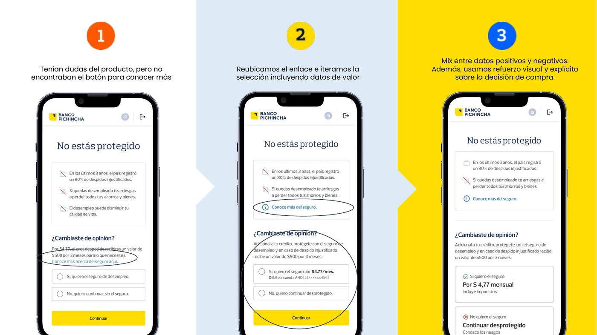
Insurance people choose on purpose
94% of loans left without insurance. Nobody was saying no. Nobody was seeing it.
24 → 52 daily sales
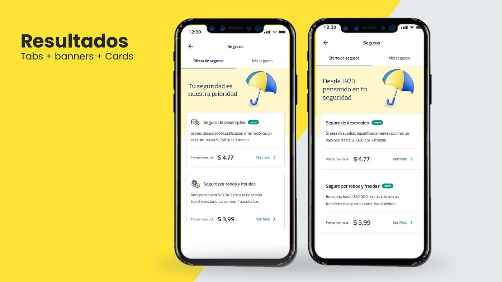
An insurance hub inside a banking app
Where would you look for insurance in your banking app? We asked 40 people.
+37% policy sales
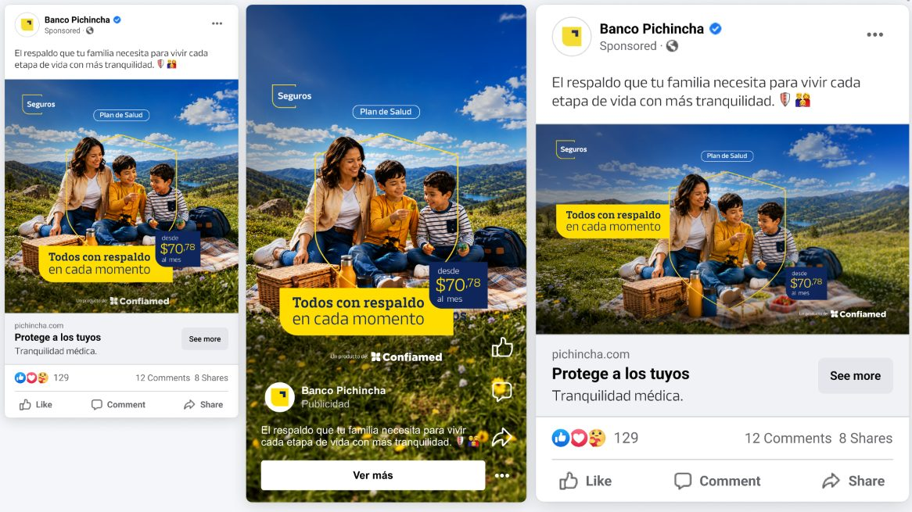
Everyday moments, not tragedies
Selling a health plan on Meta without fear: people you recognize, moments you’ve lived.
0.59% vs 0.17% conversion
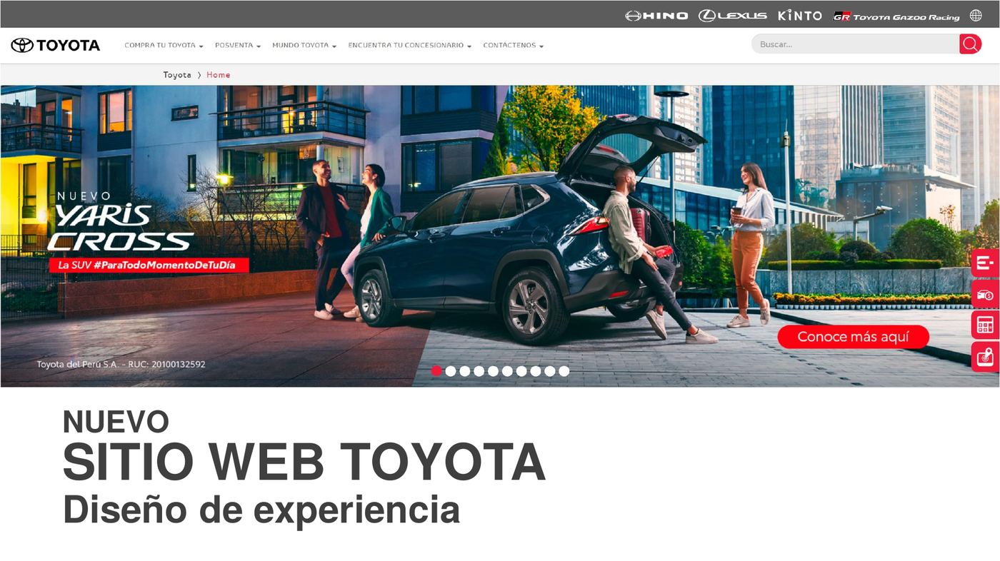
A website built around how people choose a car
Before drawing a single box, we asked drivers how they actually choose.
56 survey and 21 card sorting participants
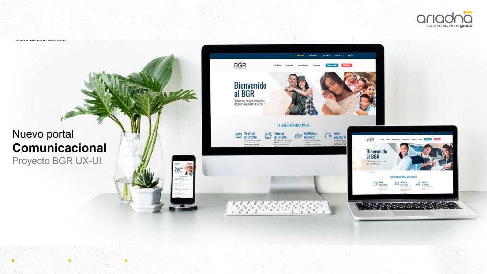
A bank website redesigned with its people
137K visits a month and almost no leads. Busy, but not working.
50+ usability errors diagnosed
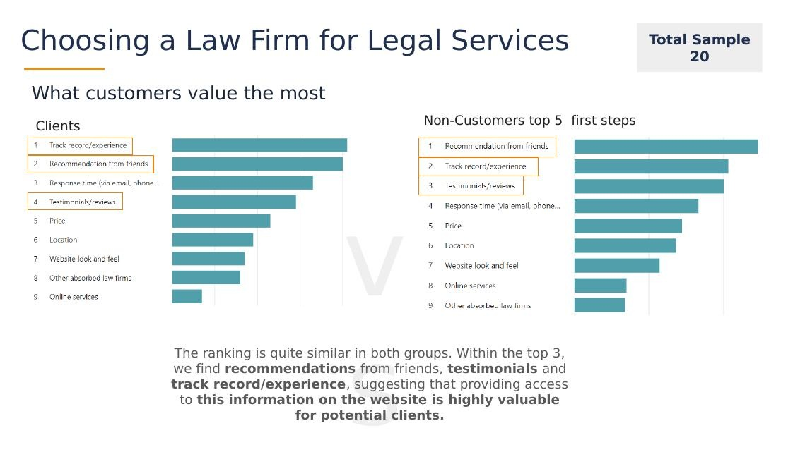
Would strangers hire this law firm online?
Clients loved them. New people couldn’t find a reason to call.
NPS 100 among clients
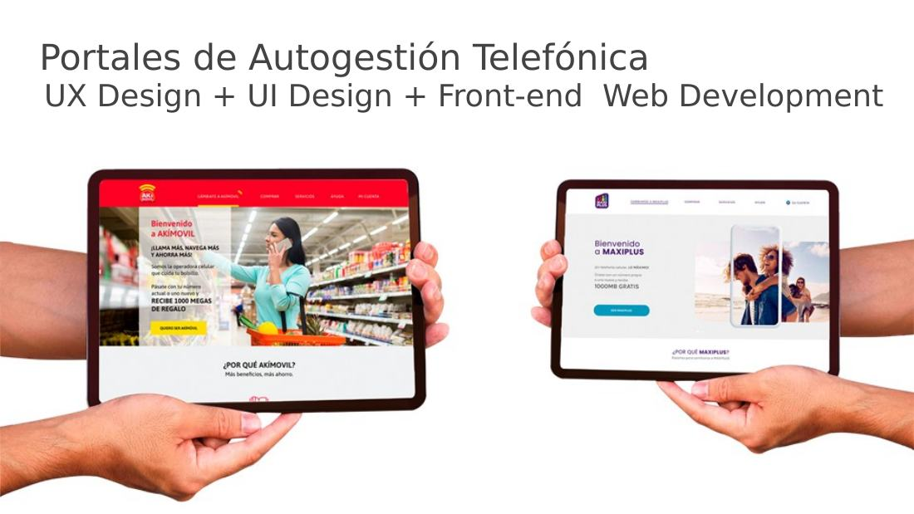
Two new mobile brands, one self-service system
Same tasks, two personalities. Building everything twice wasn’t an option.
1 framework for 2 brands
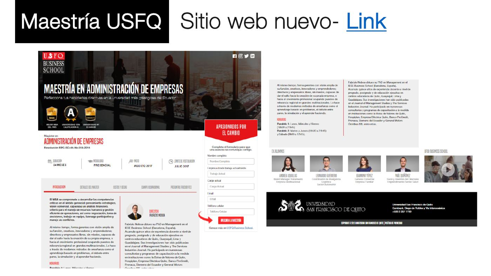
An MBA page that invites you to apply
Everything a future student needed was there. You just had to dig for it.
Before and after redesign
What I’m good at
Behavioral design
I studied neuroscience to understand why people click, hesitate or quit. Now I design for that exact moment.
Content strategy
Words are interface. I write the copy, the microcopy and the structure that holds it all together.
Research
I’ll happily watch 25 session recordings so the team doesn’t have to guess.
Product and service design
From the first workshop to the developer handoff. I used to be the developer, so I know what’s buildable.
Have a messy problem nobody has untangled yet?
Let’s talkNerdy, intense, caring and maybe a bit annoying. Mostly about the work.
I started as a developer, coding websites and games for brands. Clients would ask for a button and I’d ask why. Who is it for? Where will they use it? At some point the questions became the job.
Wunderman was where the questions got serious. It was my first real design challenge: every decision needed a reason, and I learned that something looking good, pretty or polished wasn’t enough to make it easy to use or to meet a goal. I carried that into my freelance years and then to Ariadna, where I grew from Senior UX Designer to Director of UX, working with telecom companies, car brands, retailers, universities, insurers and banks. I have a habit of diving so deep into a client’s business that I almost end up working there.
Then I wanted to know what actually happens in people’s heads when they decide, so I did a Master’s in Neuroscience and Neuromarketing. For the last five years I put it to work on Banco Pichincha’s mobile app, where behavioral design and content moved real sales.
Almost everything I know, I learned online, one course at a time. Now I’m back at it with a Master’s in Video Game Design, because few things change behavior like a good game, and I want to bring that, on purpose, to every industry.
What I love
Teaching
Workshops in person and online, and that moment when a team suddenly gets it.
Messy problems
The kind nobody has untangled yet, with real people on the other side.
Learning in public
MOOCs changed my life. I’m still a student, and I hope I always am.
Community
I volunteered with Ladies that UX Quito, and I still love helping designers grow.
Sounds like someone you’d like on your team?
Curriculum vitae
Experience
- 2023 – Jul 2026
Senior UX, Content & Behavioral Design Strategist
NOVA / Banco Pichincha
Behavioral interventions, content strategy and experimentation for the insurance portfolio in the mobile banking app. +37% policy sales in 2025 and USD 458K+ from digital self-service.
- Sep 2021 – 2023
UX Specialist
NOVA / Banco Pichincha
The bank’s first self-service insurance flow, insurance embedded in credit, and 50+ experiments. A nudge that took daily sales from 24 to 52.
- Jun 2016 – Aug 2021
Director of User Experience
Ariadna Communications Group
Joined as Senior UX Designer and went on to lead the UX practice. Research, product and service design for PwC, Movistar, Telefónica, Toyota, Kia, BGR and USFQ, among others.
- 2021 – 2022
Volunteer
Ladies that UX Quito
- Mar 2013 – Aug 2016
UX Designer and Web, App and Game Developer
Freelance
Bringing UX thinking into every development project, before it had a name on my business card.
- Mar 2012 – Aug 2014
Web Development Specialist
Wunderman
My first real design challenges: questioning the why behind each decision, and learning that looking good isn’t enough for something to be usable or to meet its goal.
- 2008 – 2012
Flash and Web Developer
BANG Studio, Acid Rain Media Lab, INTEGRAS, Media Enjoy
Education
- Master’s in Video Game DesignUniversidad Europea · online, in progress · Beca Mujer Ecuador scholarship
- Master’s in Neuroscience and NeuromarketingEIG / UIDE
- Bachelor’s in Digital Arts, Web and Multimedia DesignCampus de Tecnologías Digitales
Programs and courses
- UX Writing and Content StrategyShifta
- Service Design · Leadership in the Digital AgeColectivo23
- Marketing RebootM.AD School of Ideas
- Human-Computer Interaction, User Research, Gamification, Emotional Design and moreCoursera and Interaction Design Foundation
Tools
Figma, Miro, Microsoft Clarity, Hotjar, Google Analytics, Axure RP, Marvel, WordPress, HTML, CSS and JavaScript. AI: Claude, ChatGPT and Microsoft Copilot.
Languages
Spanish, native. English, upper-intermediate (B2), in an intensive program toward C1.
Let’s talk.
Hiring, a project, a workshop, or a messy problem you’d like a second pair of eyes on. Tell me a bit and I’ll get back to you.
Insurance people choose on purpose
Customers took a loan in the app, and 94% left without the insurance that came with it. The business wanted to know why. So did I.
94% of loans were disbursed without the insurance offered with them.
Research, behavioral design and content, with product, data and tech teams.
Daily insurance sales went from 24 to 52.
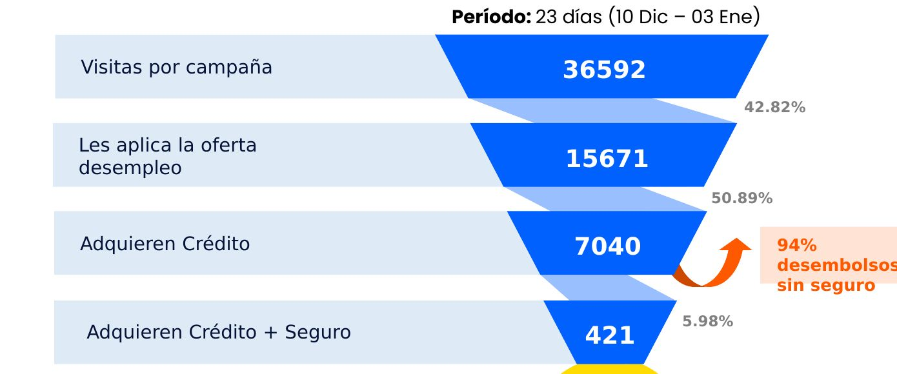
The problem
Nobody was saying no. Nobody was seeing it.
I expected to find people rejecting the insurance. Instead, 25 Hotjar recordings showed people not noticing it at all: configure the loan, then Continue, Continue, Continue until the money arrives.
Only 4.16% left on the insurance screen, and a survey of 878 users confirmed it wasn’t scaring anyone off.
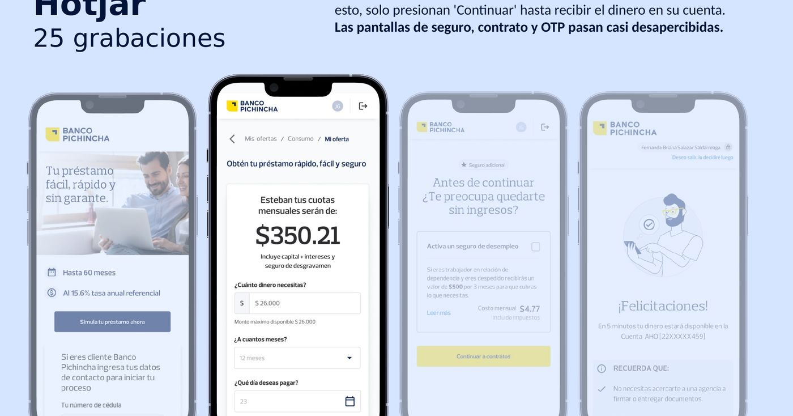
What I did
If people aren’t looking, meet them where they are
We designed a digital nudge right at the moment people skipped: a clear “You’re not protected”, an easy way to learn more, and a real choice to say yes or no.
Fifty users and five experiments later, the third version was the one.
Inside the research
Three signals, one answer
- Behavior flow: 49.1% dropped off before the insurance screen, and only 4.16% on it. 95% of visits weren’t affected by the offer.
- Abandonment survey, 878 users: two out of three simply didn’t need the insurance. It wasn’t blocking anyone’s loan.
- 25 Hotjar recordings: the job to be done happened while configuring the loan. The insurance, contract and OTP screens went almost unnoticed.
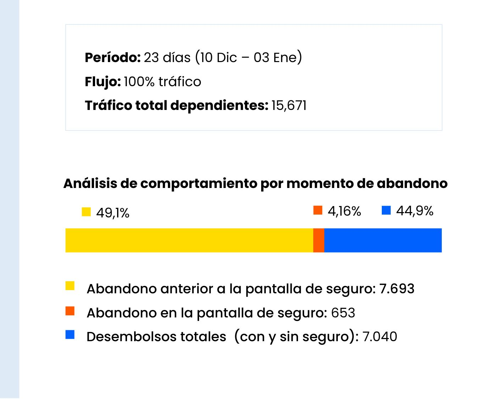
What changed
Sales more than doubled
And because it’s a nudge, not a trap, people still chose. More of them just chose to be covered.
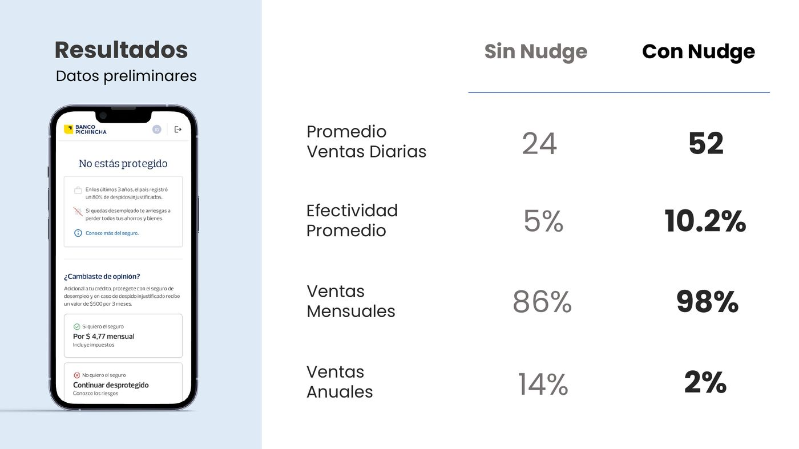
Want to hear the parts that didn’t fit here?
Let’s talkAn insurance hub inside a banking app
The app already sold one insurance. The bank wanted a second one, and a home for both.
Add a second insurance to the app, and give both a home.
Research, product design and content.
A tested hub, and +37% policy sales across the portfolio in 2025.
The problem
One door, two jobs
Where would you look for insurance in your banking app? 80% said “Requests”. But 6 in 10 expected their policy to live in “My products”.
The catch: we could only rename the entry point. Everything behind it was ours to design.
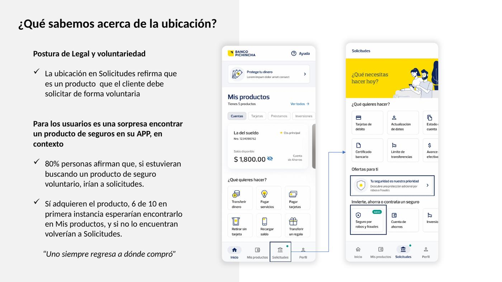
What I did
Four rounds, 40 people, a few ideas let go
Guerrilla tests first, then interviews with Figma prototypes. Some of my favorite ideas didn’t survive, which is exactly what testing is for.
People wanted coverage and price on the card before tapping, and icons mattered far less than we thought.
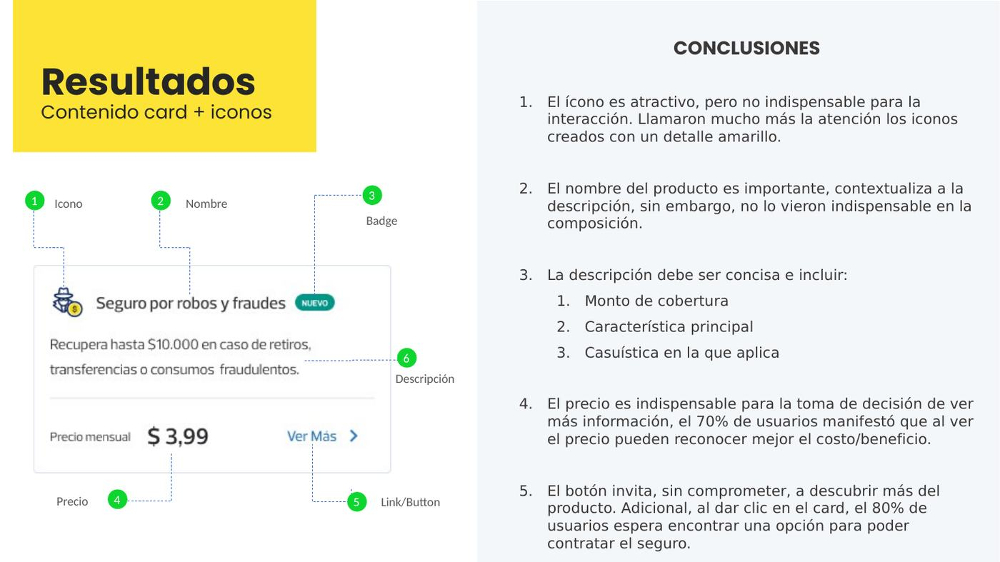
Inside the process
What we tested, and what didn’t hold
We set a clear bar: a hypothesis held only if 80% of participants confirmed it.
- Price on the card: 85% needed it to explore. Held.
- Icons to tell products apart: 90% said yes. Held.
- Icons to drive the tap: 70% ranked them last. Didn’t hold.
- Enough information on the first card: 80% missed coverage details. Didn’t hold, so the card grew.
- A warm, direct banner: 80% preferred it over a sales pitch. Held.
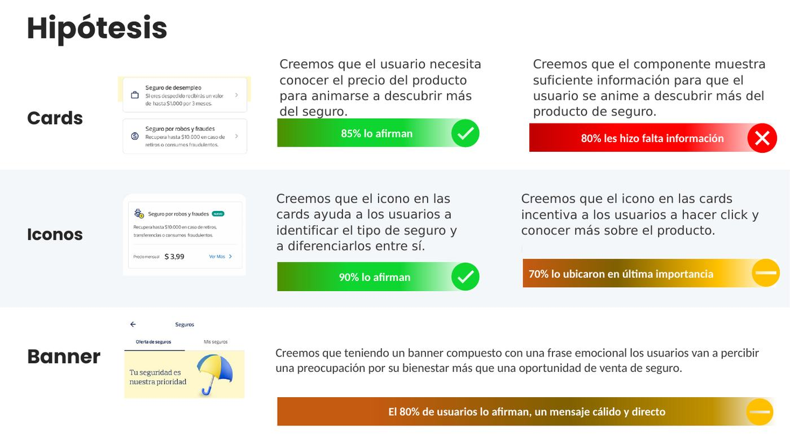
What changed
A hub people could decide with
Want to hear the parts that didn’t fit here?
Let’s talkEveryday moments, not tragedies
A health plan sold on Facebook and Instagram, without fear. Real people in ordinary moments, so you see yourself before you see the price.
Sell a health plan on Meta without leaning on fear, accidents or hospitals.
Content strategy, copy and design. Media ran the campaigns.
A content system for the whole funnel, A/B image tests, and proof that a clear message sells more.
The problem
Insurance ads love fear. People scroll past it.
Accidents, hospitals, worst-case scenarios. Most insurance ads try to scare you into buying, and most people either scroll past or feel manipulated.
We wanted the opposite: an ad you’d recognize yourself in.
What I did
Characters you’d swear you know
I built the content around everyday moments: a family hike, a picnic, a check-up at home, a photographer on a busy day, a shoot on a cobblestone street. Families for the family plan, independent workers for the individual one.
The strategy weighed as much as the tests: the image makes you feel identified, and the copy turns that feeling into a reason to act.
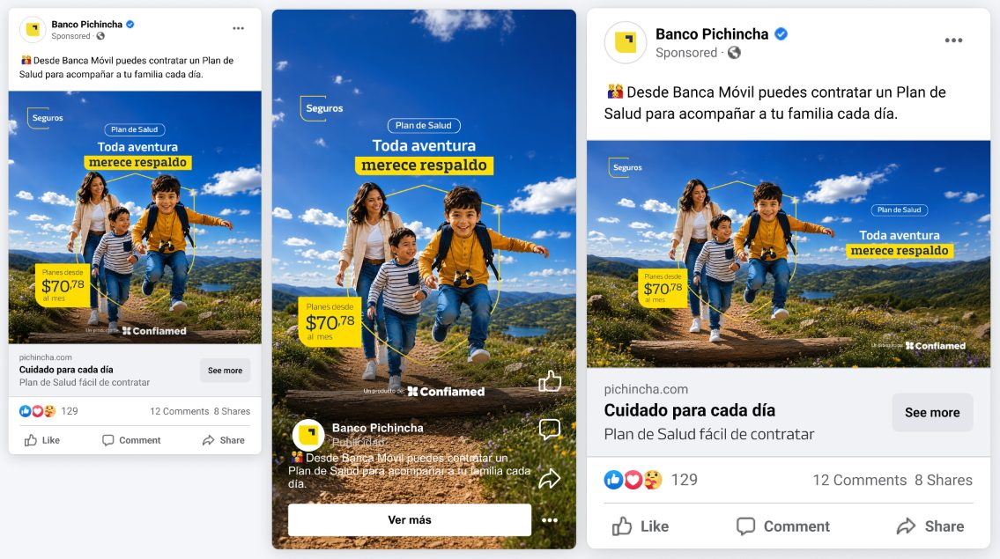
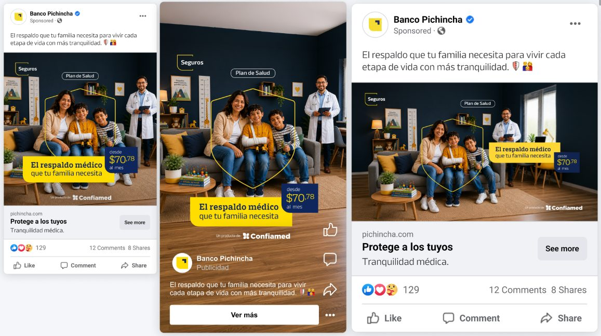
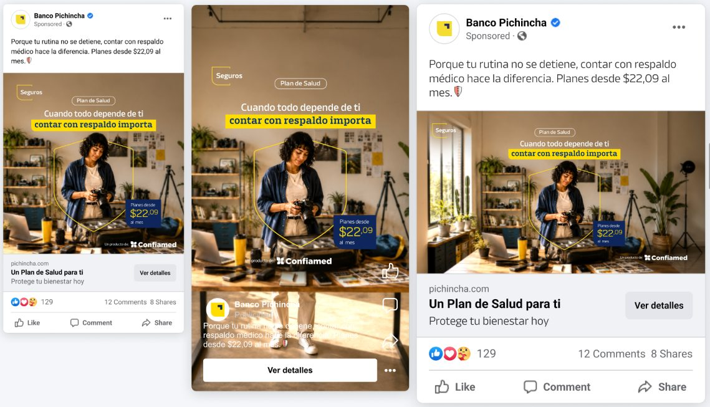
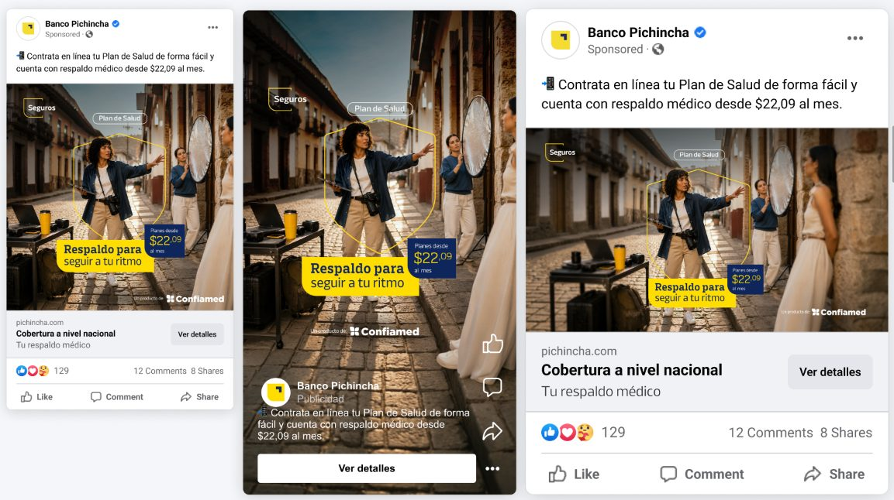
Inside the system
Every piece, ready to hand off
Each ad came in three formats (1080×1080, 1080×1920 and 1920×1080), with three to five headlines written for Meta’s 27-character limit, five primary texts of 90 to 100 characters, and a description. The media team took it from there.
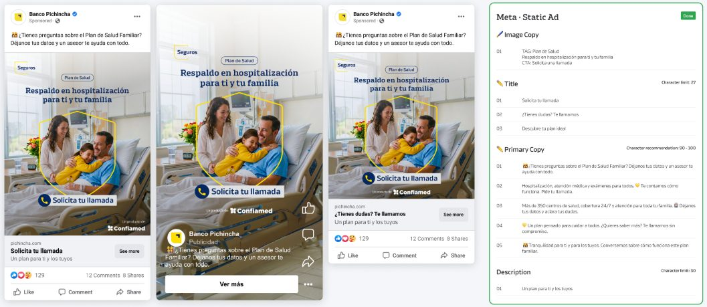
The A/B test
How soon after an emergency is the right moment?
Same copy, same price, two moments. In A, she’s still at the clinic, in a wheelchair with a nurse beside her. In B, she’s recovering at home, laughing with a friend.
The question behind it: when does it feel natural to think about being covered? Close enough to the emergency to feel relevant, far enough that it doesn’t feel like tragedy. And how much can an image and a line of copy nudge that decision?
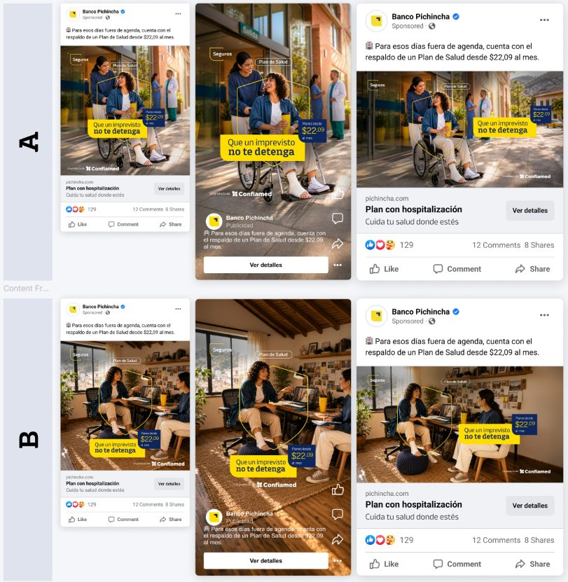
What changed
Clarity sells
In a related test for life insurance, a message focused only on life outperformed one that mixed in health benefits:
Saying less, and saying it to the right person, sold more.
Want to hear the parts that didn’t fit here?
Let’s talkA website built around how people choose a car
Toyota del Perú needed a new website. Before drawing a single box, we asked drivers how they actually choose a car.
Organize a new website around how people actually choose a car.
UX research and information architecture.
A new site map and actions for every stage of the journey.
The problem
Seven reasons to visit, zero organized around them
People come to a car brand to buy, compare, renew, care for, improve, maintain or simply learn. The old site was organized around the brand, not around any of them.
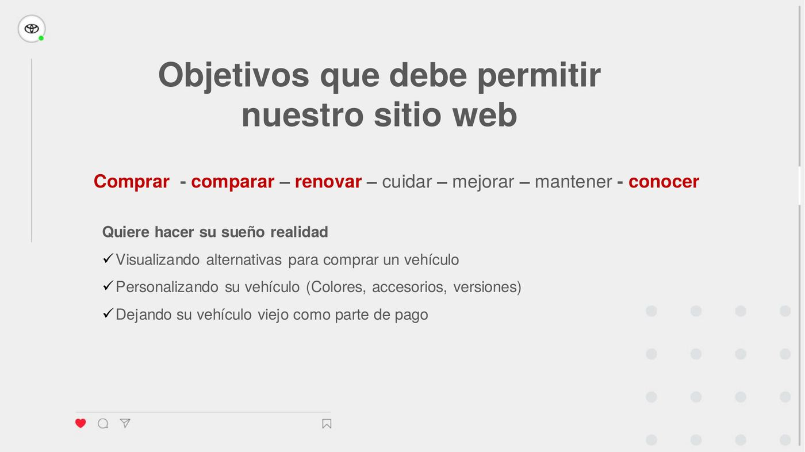
What I did
Listen first, draw later
Three workshops with Toyota’s team, heatmaps on the live site, a survey with 56 drivers and a card sorting with 21 people.
The big surprise: someone renewing their car and someone buying their first one search in completely different ways.
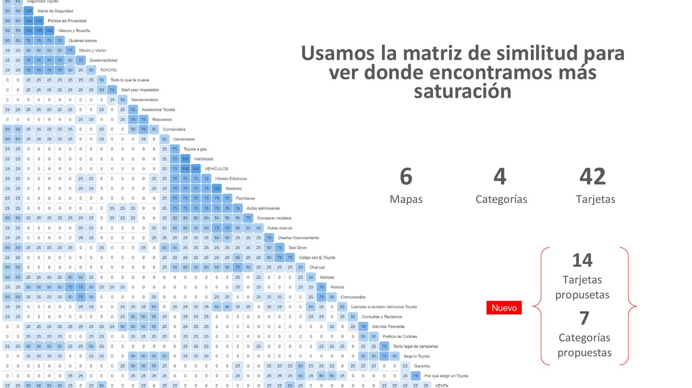
Inside the research
What drivers told us
- Three workshops, 6 hours, 11 people from Toyota to align business goals, user needs and UX goals.
- Renewing drivers go straight to what they need: online research, YouTube reviews, then the dealer to validate.
- First-time buyers explore more: the brand’s site and Google first, then seeing the car live and asking family and friends.
- Innovation was the most valued brand attribute, closely tied to technology and safety.
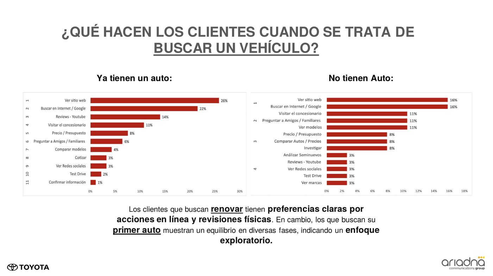
What changed
A site map that thinks like a driver
A new architecture and clear actions for each moment of the journey, from online research to the dealership.
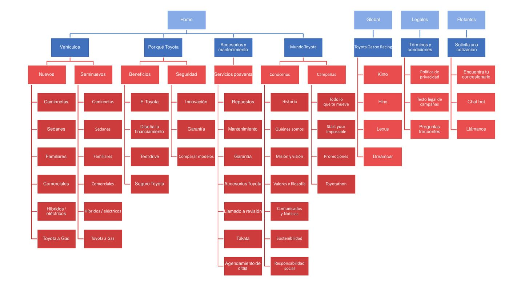
Want to hear the parts that didn’t fit here?
Let’s talkA bank website redesigned with its people
137K visits a month, more than 50 usability errors and almost no leads. Banco General Rumiñahui’s website was busy, but not working.
137K visits a month, 50+ usability errors and very few leads.
Research, UX and the style guide.
A portal organized around what people come to do.
The problem
Plenty of visits, very little action
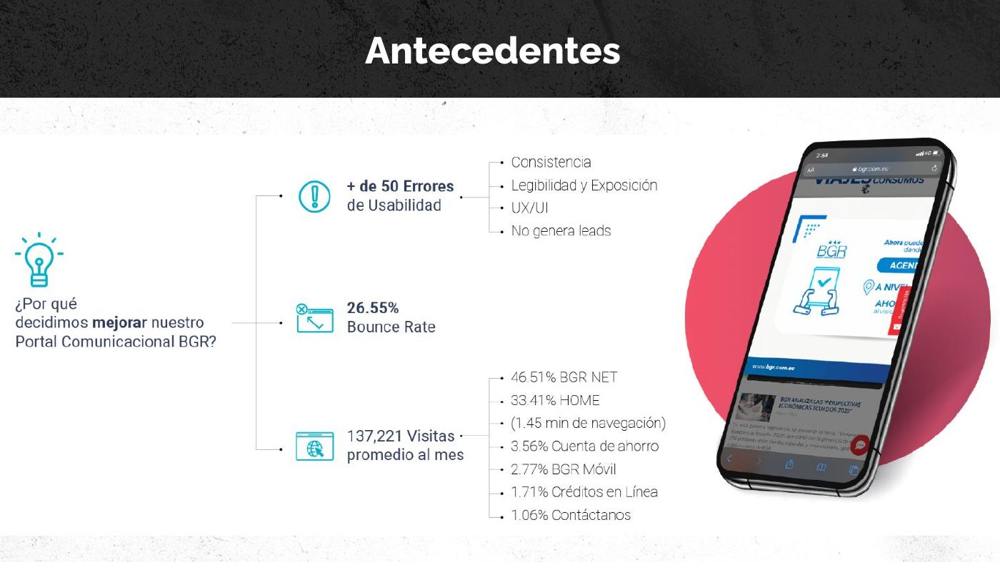
What I did
Seven rounds, inside out
You can’t redesign a bank’s website from the outside, so we did it with them: seven rounds with product heads, marketing and management.
We also ran a card sorting with 17 customers, military, civilian and business clients alike, and a usability test before a single screen was final.
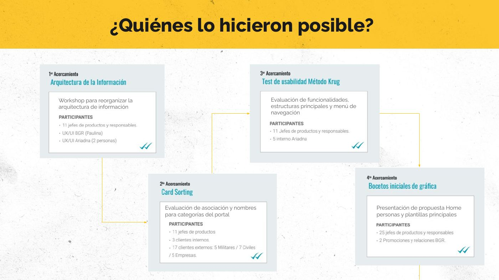
Inside the process
Seven rounds with the bank
- Information architecture workshop with 11 product heads.
- Card sorting with 11 product heads, 3 internal and 17 external clients.
- Usability test of structure and navigation, Krug method.
- First visual sketches with 25 product heads and marketing.
- Content validation with every area.
- Visual and content review.
- Brand validation with management.
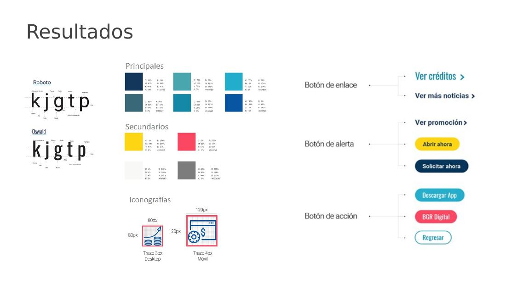
What changed
Built around what people come to do
Get a loan, a card, grow your money or open an account. Plus a style guide, so it stays that way.
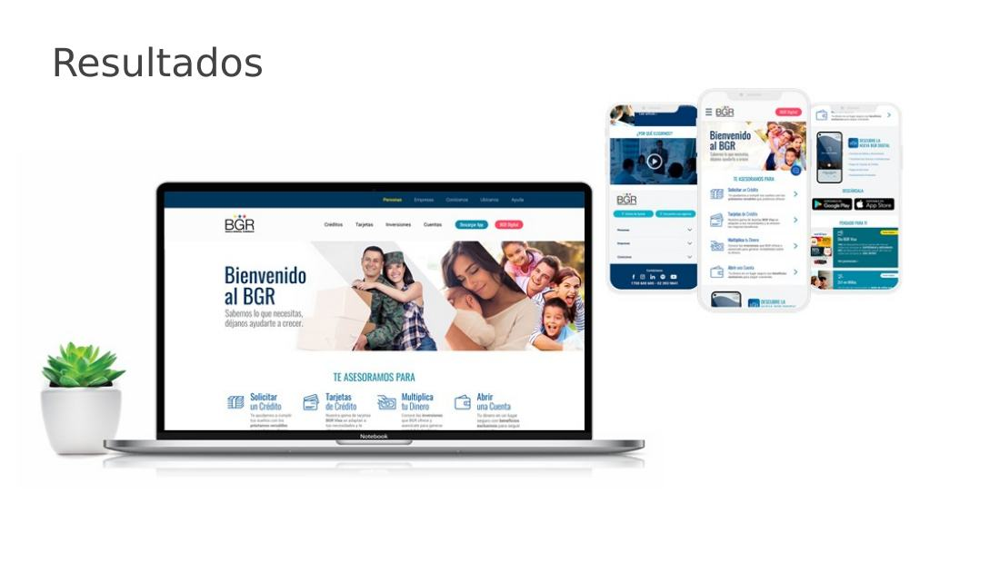
Want to hear the parts that didn’t fit here?
Let’s talkWould strangers hire this law firm online?
A law firm in Hamilton, Canada, with clients who love it. The question was whether strangers would hire them online.
Turn referral-only trust into trust strangers can find online.
Research, information architecture and the WordPress build.
lutzlaw.ca, live since 2025.
The problem
Loved by clients, invisible to strangers
Their clients gave them an NPS of 100. Perfect. But they all came through referrals.
New people started on Google and wanted proof before picking up the phone: testimonials, track record, real faces.
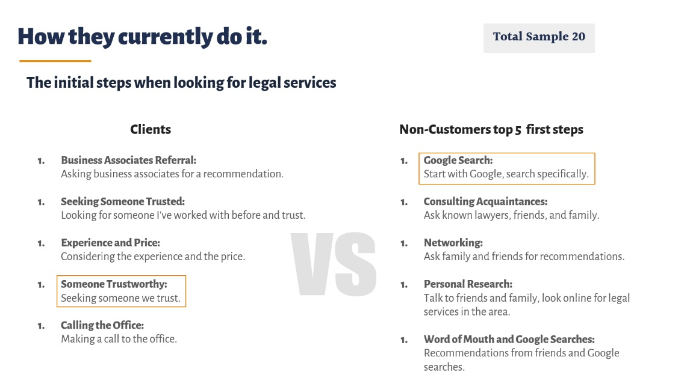
What I did
From interviews to a live site
I talked to 5 clients and 15 non-clients, turned what I learned into the site’s architecture, and then built it myself in WordPress from the visual design I received.
Inside the research
What strangers need before they call
- Recommendations, testimonials and track record ranked in the top 3 for clients and non-clients alike.
- On a scale of 1 to 10, the likelihood of choosing a fully online legal service was 5.3.
- People wanted online convenience, but also to feel heard, get clear explanations and know their data was safe.
- The recommendation: a hybrid service, human where it matters and automated where it helps.
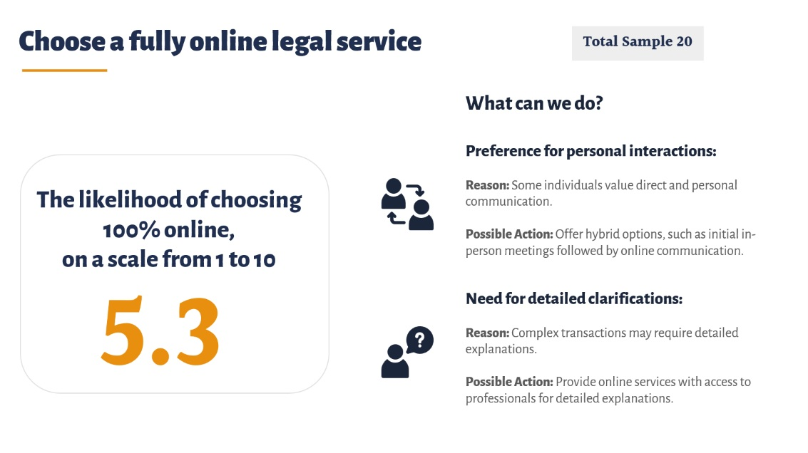
What changed
Online, but human
lutzlaw.ca now leads with what strangers were looking for: 30+ years of experience, client testimonials, clear practice areas and a direct line to a real person.
Want to hear the parts that didn’t fit here?
Let’s talkTwo new mobile brands, one self-service system
Telefónica launched Akimóvil and Maxiplus, and their customers needed to manage their lines on their own.
Self-service for two brand-new mobile brands.
UX, UI and front-end development.
One component framework with a style guide per brand.
The problem
Same tasks, two personalities
Both brands needed exactly the same self-service tasks, each with its own look. Building everything twice would have been slow and expensive.
What I did
Design and build in one loop
I designed the architecture and wireframes, worked on the interface, and helped build a shared front-end framework. My developer past came in handy.
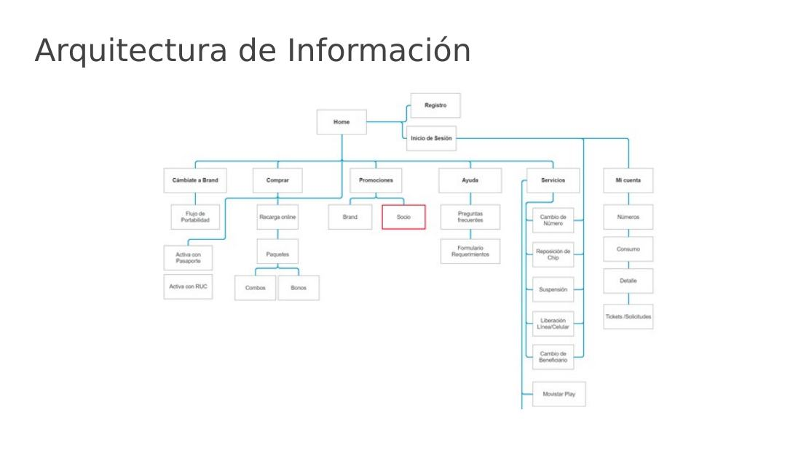
Inside the process
Three phases, one team
UX design first, with flows and architecture. Then UI in stages. Then front-end development of a shared framework, with reusable components and a style guide for each brand.
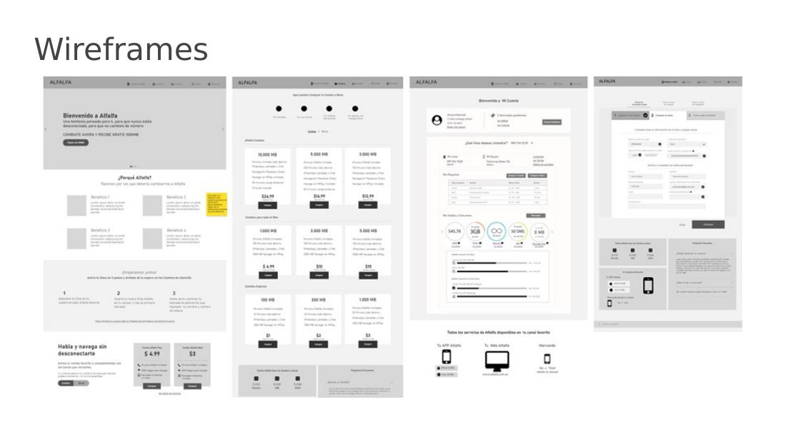
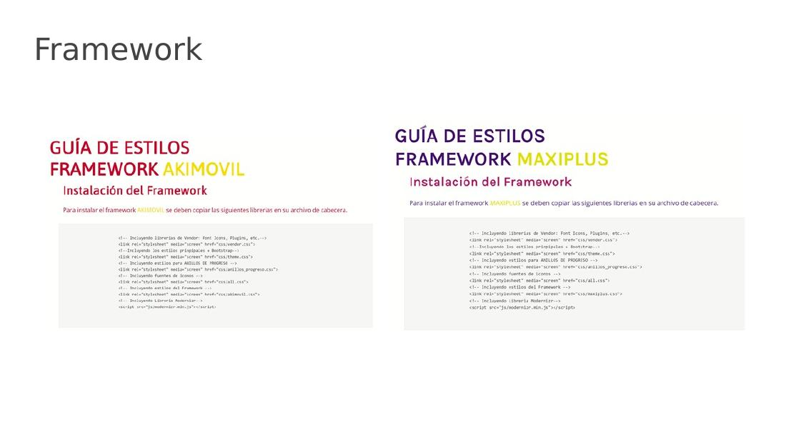
What changed
One system, two brands
One set of components, two style guides. Each brand looks like itself, and both work the same way.
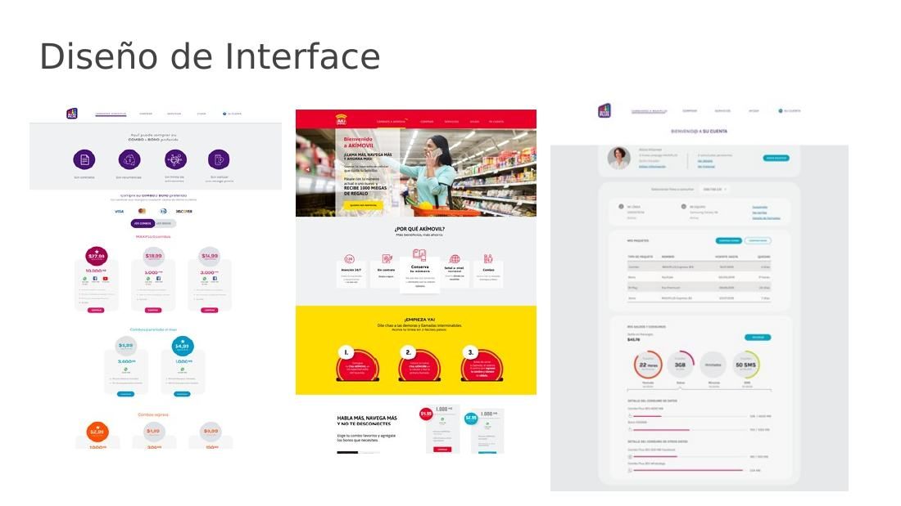
Want to hear the parts that didn’t fit here?
Let’s talkAn MBA page that invites you to apply
USFQ’s MBA page had everything a future student needed. You just had to dig for it.
A long MBA page that made applying hard.
Content analysis, IA, wireframes and prototype.
A page where applying is the obvious next step.
The problem
A long wall of information
Duration, schedule, dates, requirements and how to apply, all buried in one long page.
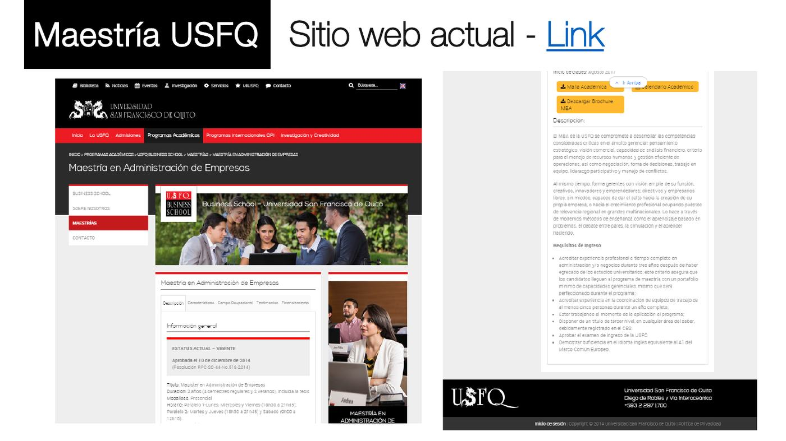
What I did
Key facts first, form always within reach
I analyzed the content, rebuilt the architecture, looked at how other schools do it, and designed wireframes and a clickable prototype.
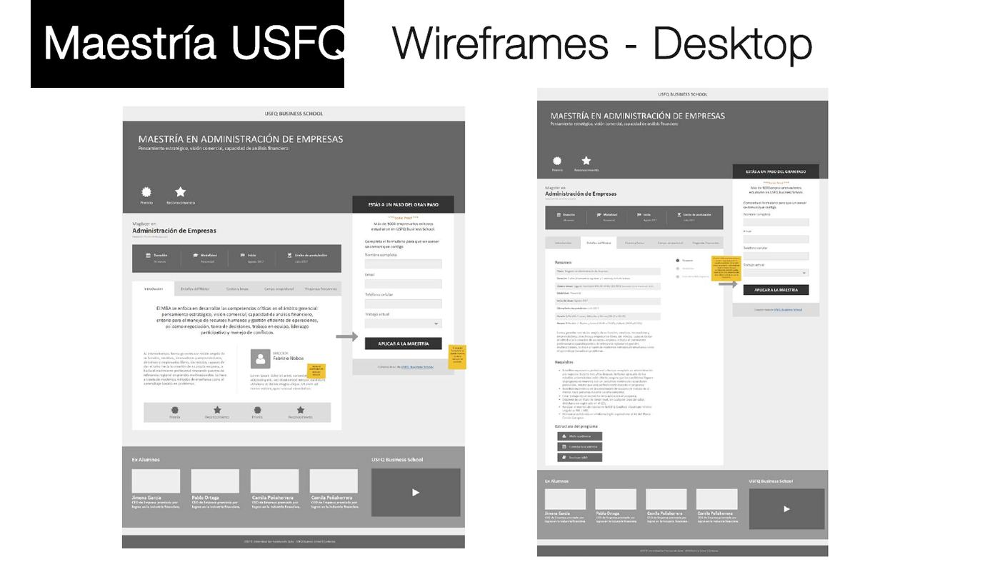
Inside the process
How the page was rebuilt
- Content audit of the existing page, desktop and mobile.
- New information architecture with the facts people ask first: duration, format, start date and deadline.
- Benchmark of other business schools.
- Wireframes for desktop and mobile, then a clickable prototype in Marvel.
What changed
“Apply” became the obvious next step
The new page answers the big questions in seconds, adds social proof from alumni, and keeps the application form one glance away.
Want to hear the parts that didn’t fit here?
Let’s talk